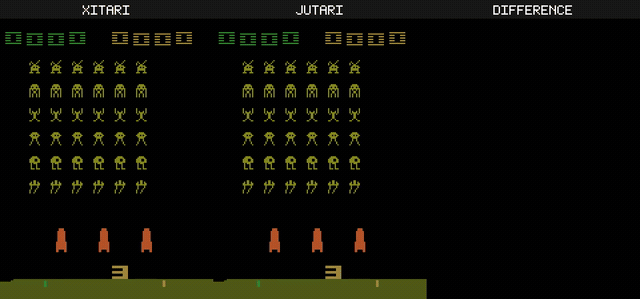

A reproducibility and provenance dashboard for the two papers built on the differentiable Atari 2600 VCS. Every claim links to the exact code, command, artifact, runtime and hardware — and to the external reference that proves the emulator is real.

Space Invaders — xitari (reference C++) · jutari (our Julia port) · pixel difference. The difference panel is solid black: byte-for-byte identical output.
Validated bit-for-bit against an independent C++ emulator
The strongest defence against “the AI hallucinated it” is that the two differentiable ports are checked against xitari — a separately written, pre-existing C++ Atari 2600 emulator that is not part of this project. On all 64 ALE-supported games the ports reproduce xitari’s 128 B of RAM byte-for-byte and its 210×160 framebuffer pixel-for-pixel. Hallucinated code does not accidentally match an external reference to the bit.
main with the prompt→code chain; a 7,525-line running bug-fix log — bug_fix_log.mdThis site covers Paper 1 and Paper 2 only.
Two end-to-end differentiable ports of the xitari VCS, validated bit-for-bit
Open the evidence ledger →
Nature Machine Intelligence (in preparation)Scoring XAI / mechanistic-interpretability methods against the exact causal truth of a known machine
Open the evidence ledger →
Each row in a paper’s ledger is one auditable result.
| Field | What it gives the reviewer |
|---|---|
| Value | the measured number, read from the committed result file |
| Script | link to the exact source that produces it |
| Command | the verbatim invocation to reproduce it |
| Artifact | the committed output (results table / JSON / figure) it wrote |
| Runtime & Hardware | wall-clock and the machine it ran on |
| Verified by | the test / oracle gate that guards it |
| Status | measured vs deferred — we never dress a plan up as a result |